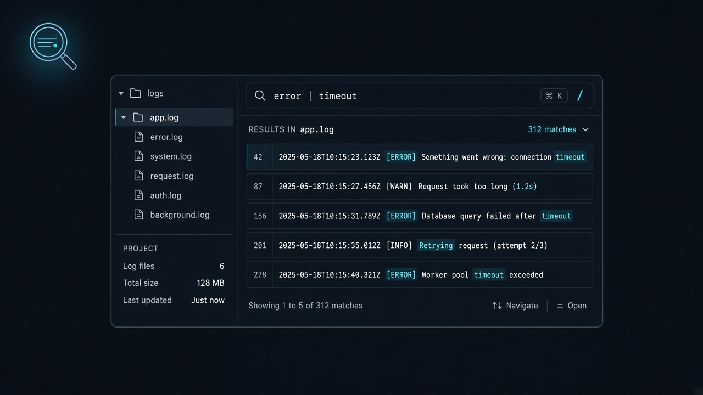

基于 Tauri 2 + Rust + React 19 构建。选择目录即可秒级搜索普通文本与 ZIP / TAR / GZ / 7z 归档，支持多条件管道过滤与正则表达式，海量日志流畅呈现。
git clone https://github.com/zyf8827/insight-log.git

抛弃沉重的全量解压与卡顿的文本编辑器，提供纯粹、专注、高性能的本地检索体验。
主搜索条占据第一视觉中心，快捷键 Ctrl/Cmd + F 快速唤起；高级筛选收纳折叠，侧栏目录树按需展开，把宝贵屏宽留给结果。
输入 error | timeout | 500 表示同一行必须同时满足所有关键词（逻辑 AND，非 OR），层层递进锁定核心根因。
基于文件头魔数自动识别 ZIP、TAR、GZ、7z（含 .tar.gz），无需预先手动解压即可逐条目快速过滤扫描。
默认按字面量精确匹配并自动转义特殊符号，开箱即用；勾选「正则表达式」即可直通后端 Rust regex 引擎的完整表达力。
集成 @tanstack/react-virtual 动态高度虚拟列表，万级命中毫无卡顿；等宽行号列，高亮命中词并弱化非关键上下文。
前后 10 行上下文，临近匹配自动智能合并；配备内置文件查看器，一键跳转到源文件或压缩包内部条目的指定行位。
在下方模拟器中尝试不同的检索表达式，观察多条件 AND 过滤与高亮如何协同工作。
每一像素都为提升翻查效率服务，减少认知负荷。
默认收起侧栏文件树，释放 100% 水平视界给宽行日志；需要排查目录结构时一键展开。
Glob 包含与排除（如 **/*.log, !*.tmp）及上限结果限制折叠归纳，界面始终保持整洁。
针对已搜出列表在前端执行即时过滤（按文件名或文本），无需重复发起重型 I/O 扫描。
代码行号固定等宽对齐，匹配词采用明亮标记，非匹配上下文柔和展示，层次分明。
简单规则覆盖 99% 的本地排障场景。
| 搜索模式 | 示例 | 匹配语义 |
|---|---|---|
| 字面量搜索（默认） | timeout 或 [order_service] |
精确字符匹配，特殊字符自动安全转义，开箱即查。 |
| 管道多条件 AND | error | database | connection |
核心特性 同一行须同时包含所有子片段（逻辑 AND，非 OR）。 |
| 正则表达式 | (ERROR|WARN)-\d{4,5} |
勾选「正则表达式」后激活后端 Rust regex 引擎语法。 |
| 大小写敏感 | Exception vs exception |
切换大小写敏感开关以精确区分或模糊忽略大小写。 |
| Glob 包含与排除 | **/*.log / !**/*.tmp |
高级筛选面板中指定目标文件后缀或排除噪音文件。 |
Insight Log 注重可控性与系统稳定性，不夸大宣传，明晰边界与设计取舍。
目前原生支持 ZIP / TAR / GZ / 7z（仅限未加密归档）。
明确不支持 RAR 格式，亦不支持带密码保护的加密压缩包。
为防止大型归档导致宿主内存溢出或遭遇 Zip Bomb：
超过上述硬上限的条目将被安全跳过并在控制台给出告警。
所有文件与归档读取范围被严格限制在用户当前选定的工作目录内，拒绝任何相对路径穿越（Path Traversal）。
配置标准 CSP 策略，本地 Webview 绝不外泄本地数据。
作为面向开发者与 SRE 的开源桌面应用，功能以实际仓库代码与发布版本为准。
欢迎在 GitHub 提交 Issue 与 Pull Request 共同改进！
在您自己的工作机上编译运行 Insight Log。
rustup 安装）libgtk-3-dev, libwebkit2gtk-4.1-devWebView2Xcode Command Line Toolsgit clone https://github.com/zyf8827/insight-log.git
cd insight-logpnpm installpnpm run dev:app
# 或运行脚本: ./scripts/dev.sh# 快速生成可执行文件
pnpm run build:app
# 运行前后端完整单元检查
pnpm run typecheck
cargo test --manifest-path src-tauri/Cargo.toml